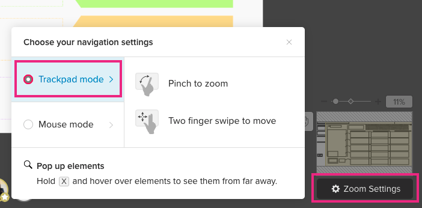

How to Get Started with Mural
By Julia Heatherwick
Mural is an online visual collaboration tool located at www.mural.com. You will need to learn a few basic tools to get started. The first step is learning how to zoom in and out of the canvas. The zoom settings are located at the bottom right of your Mural canvas. You can click on Zoom Settings to see your options available.
Mouse: Move your cursor over the area on the canvas you wish to zoom in or out. Using the roller ball of your mouse, scroll up with your index finger to zoom out and scroll down with your index finger to zoom in.
Trackpad: Move your cursor over the area on the canvas you wish to zoom in or out. With your thumb and index finger pinch the trackpad to zoom in. Spread your thumb and index finger apart on the trackpack to zoom out.

Move the Canvas: Place your cursor over the hand icon and click on it. Your cursor will turn into a hand. You can move the canvas around to view a different location.
Edit the Canvas: Place your cursor over the hand icon and click on it again. Your cursor will turn into a pointer. You can now use the editing features.

Click on the Sticky Note Icon: Place your cursor over the sticky note icon and click on it. The window will appear providing you a selection of endless sticky notes.
Select a Sticky Note: Place your cursor over the blue sticky note and drag it over onto your Mural canvas.

Type into the Sticky Note: Place your cursor on the sticky note and click. You can begin typing into the sticky note.

Click on the Question Mark Icon: Place your cursor over the question mark icon located in the upper right hand side of the Mural canvas. The drop down menu will display a variety of resources available to you to learn more about Mural.